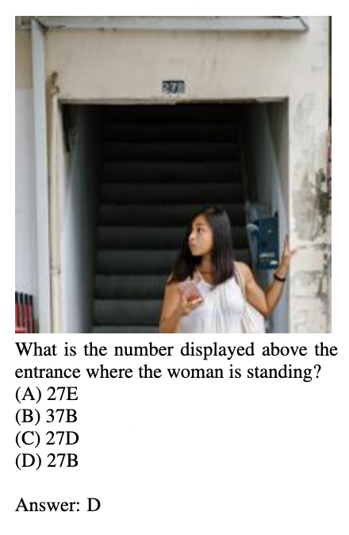
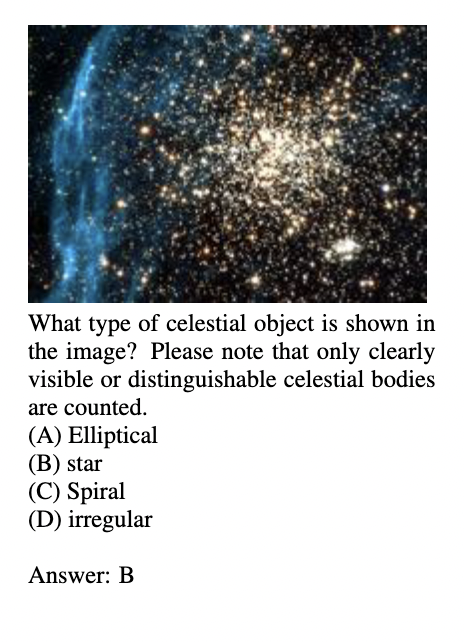
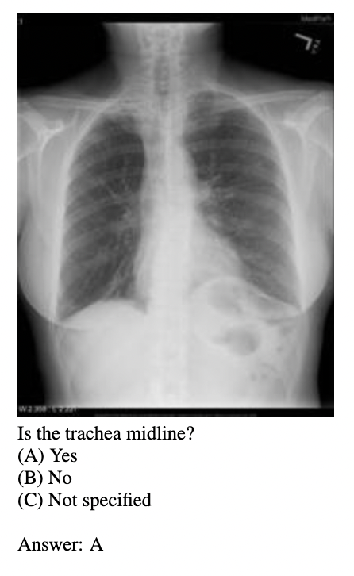
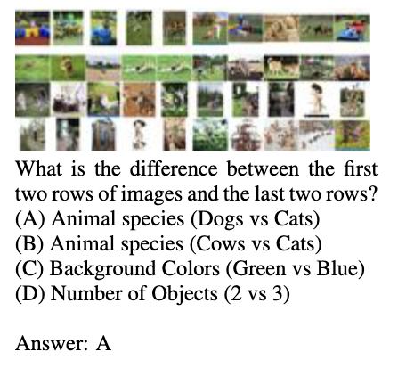
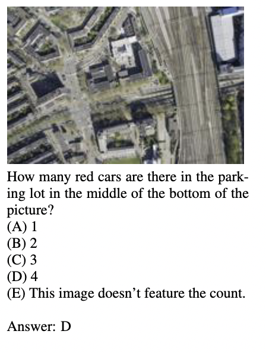
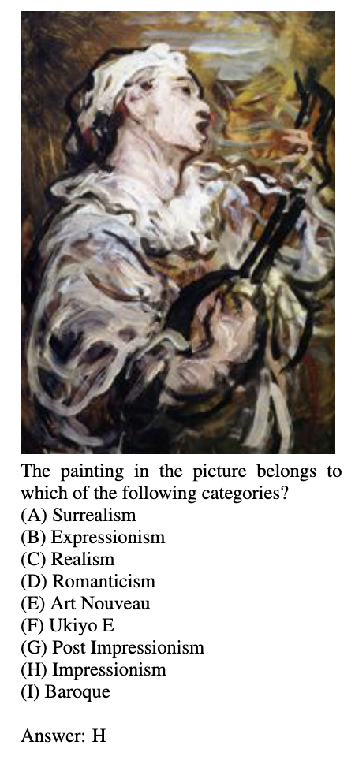
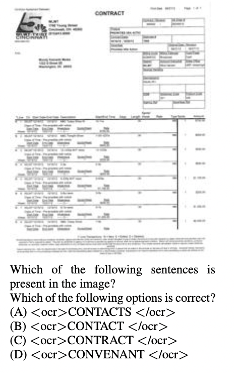
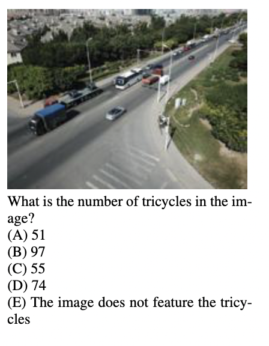

Accuracy scores on the testmini subset (1,000 examples) of HRScene.
HRScene
How Far Are VLMs from Effective High-Resolution Image Understanding?
1
Comparison between the benchmarks that the models are evaluated and HRScene. The y-axis is the square root of the total pixel. The boxes/icons indicate the image resolution they contain/support. The black lines inside each box show the average resolutions. For most of the vision-based benchmarks that VLMs are evaluated on, the average resolution is typically below 1k, making them unsuitable for HRI evaluation.
Performance of some VLMs on our test set. We identify 8 categories of HRI tasks: Daily pictures, Urban planning, Paper scanned images, Artwork, Multi-subimages, Remote sensing, Medical Diagnosing, and Research understanding. Experiments on real-world tasks demonstrate that current VLMs perform modestly, with an average accuracy of around 50%, highlighting substantial challenges of HRScene. Besides, we also provide the human performance of all real-world datasets by engaging graduate-level annotators to annotate 750 image-question pairs.
High-resolution image (HRI) understanding aims to process images with a large number of pixels such as pathological images and agricultural aerial images, both of which can exceed 1 million pixels. Vision Large Language Models (VLMs) typically handle higher-resolution images through dynamic patching. However, there is a lack of a comprehensive benchmark for VLMs to evaluate HRI understanding, leaving this domain underexplored. To address this gap, we introduce HRScene, a novel unified benchmark for HRI understanding with rich scenes. HRScene incorporates 25 real-world datasets and 2 synthetic diagnostic datasets with resolutions ranging from 1,024 × 1,024 to 35,503 × 26,627. HRScene is collected and re-annotated by 10 graduate-level annotators, covering 25 scenarios, ranging from microscopic and radiology images to street views, long-range pictures, and telescope images. It includes high-resolution images of real-world objects, scanned documents, and composite multi-image. The two diagnostic evaluation datasets are synthesized by combining the target image with the gold answer and similar distracting images in different orders. These datasets assess how well models utilize HRI by comparing performance across different image regions. We conduct extensive experiments involving 27 VLMs, including Gemini 2.0 Pro and GPT-4o. Experiments on HRScene show that current VLMs achieve an average accuracy of around 50% on real-world tasks, revealing significant gaps in HRI understanding. Results on our synthetic datasets reveal that VLMs struggle to effectively utilize HRI regions compared to low-resolution images, with a gap exceeding 20%. Our code and data will be publicly available.
Accuracy scores on the testmini subset (1,000 examples) of HRScene.
Accuracy scores on the test subset (5,323 examples with private ground truth) of HRScene.
🚨 Open source models are marked in Green and Closed source models are marked in Red
HRScene is collected from 25 existing data resources and 8 of them are re-annotated by 10 graduate-level annotators, with diverse view scales, ranging from microscope to radiology, street views, long-range, and telescope images. It contains high-resolution images of real objects, electronic documents, and composite multi-subimages. Besides, six datasets require domain-expert knowledge, while the remaining 19 belong to general domains. The diagnostic dataset is synthesized by combining the target image with the gold answer and visually similar distractors arranged in different orders to assess HRI utilization. Overall, HRScene comprises 7,081 images, with 2,008 of them being re-annotated.
Distribution of resolution of each dataset. X-axis is the resolution and $n$k indicates the resolution is at least $n^2*10^6$ pixels.

Some examples of HRScene. Blue ones are diagnostic datasets and purple ones are real-world datasets.

Overview of 25 real-world datasets and their statistics. * indicates that the dataset is reannotated.
HRScene consists of 7,073 samples, divided into three splits:
Key statistics of
HRScene.
Source dataset distribution of
HRScene.
One example for each category in HRScene
Daily
Research
Medical
Sub Image
Remote Sensing
Art
Paper
Urban

Overall results of all models on real-world datasets of
HRScene.
The models are clustered according to the parameter sizes.
Bold indicates global best performance, while underline represents the best of the group.
Avg is the mean value of the column/row.
Results show that due to the native resolution support of Qwen, it obtains SOTA even general capability might not be the best.
This result highlights the importance of the HRI processing capability of native resolution to obtain high performance.
However, the average performance across all categories is only 48.54%, showing the large gap between VLMs and efficient HRI processing.
Table shows the statistics of the WhiteBackground diagnosis.
We report the average performance of the samples (Perf ↑), the performance drop with image size increasing from 1x1 (Size ↑),
and the region expectation gap (Region ↓), which is the difference between the highest performance region and the mean
performance of every region. We call this Regional Divergence. As shown in Table, most of the models cannot maintain consistent
performance with increasing image size. Furthermore, models exhibit significant Region Divergence, usually amplified with increasing image size.
Surprisingly, We observe a phenomenon that is similar to lost-in-the-middle. Figure shows the performance change of the models with increasing Manhattan distance from row 1, column 1 to the needle image. Differently, we observe the performance forms a U-shape based on the Manhattan distance from the left upper corner rather than the linear depth of the needle in traditional NIAH. We call this Lost-in-the-middle Manhattan.
Detailed performance of some models on two diagnose datasets.
Explore the outputs of each model on HRScene
@article{zhang2025hrscene,
title={HRScene: How Far Are VLMs from Effective High-Resolution Image Understanding?},
author={Zhang, Yusen and Zheng, Wenliang and Madasu, Aashrith and Shi, Peng and Kamoi, Ryo and Zhou, Hao and Zou, Zhuoyang and Zhao, Shu and Das, Sarkar Snigdha Sarathi and Gupta, Vipul and Lu, Xiaoxin and Zhang, Nan and Zhang, Ranran Haoran and Iyer, Avitej and Lou, Renze and Yin, Wenpeng and Zhang, Rui},
journal={arXiv preprint},
year={2025}
}